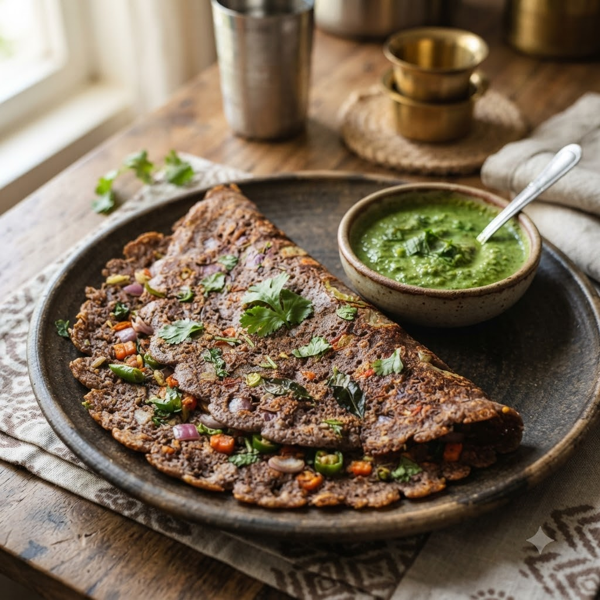

Ragi (Finger Millet) Vegetable Chilla

Ragi (Finger Millet) Vegetable Chilla
Airfryer – Fry (griddle-style) 180°C 11 min makes ~6
Gluten-Free • High-Fibre • Vegetarian • Everyday
Prep ahead: Rest the batter for 12 minutes before cooking so the ragi flour hydrates fully.
Ingredients
- 1 cup ragi (finger millet) flour
- 1/4 cup grated carrot & chopped onion
- 1 green chilli (hari mirch), chopped
- 1/4 tsp cumin seeds (jeera)
- Salt to taste
- Water to make a thin batter
- Oil for cooking
Method
1Preheat: Preheat the Airfryer to 180°C for 4 minutes before adding the food to the basket.
2Mix ragi flour, vegetables, cumin, chilli and salt; whisk in water to a thin, pourable batter. Rest 12 minutes.
3Brush the Airfryer’s baking pan or a flat oven-safe dish with oil and preheat.
4Pour a thin layer of batter, spray the top lightly with oil, and cook at 180°C for 6 minutes per side until firm and lightly browned.
5Repeat with the remaining batter.
Tip: No air fryer pan handy? This batter also cooks well the traditional way on a hot tawa.